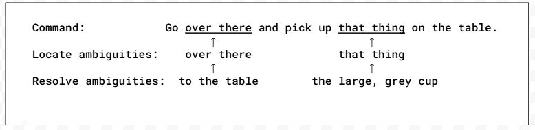
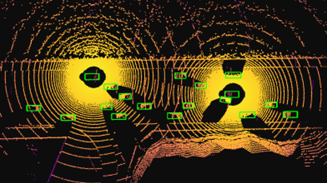
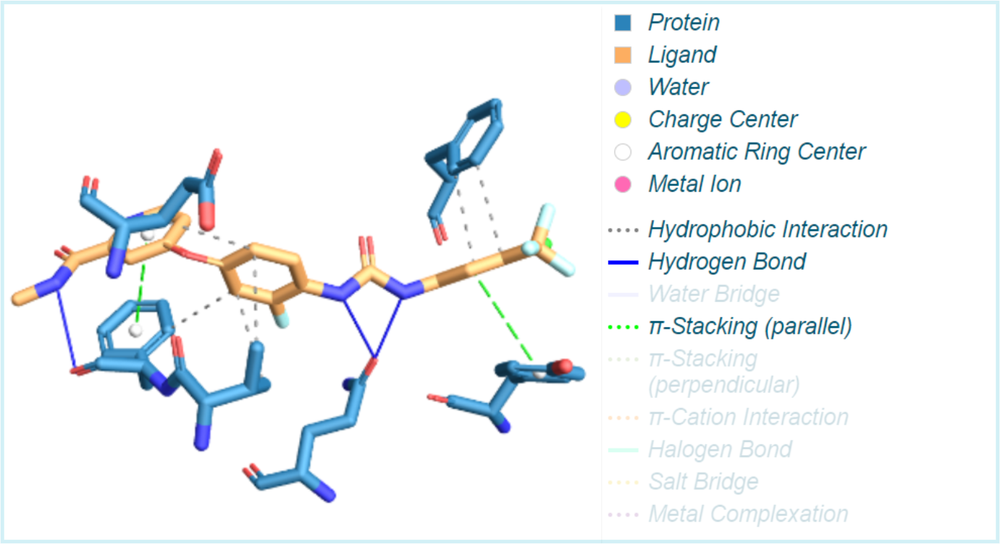
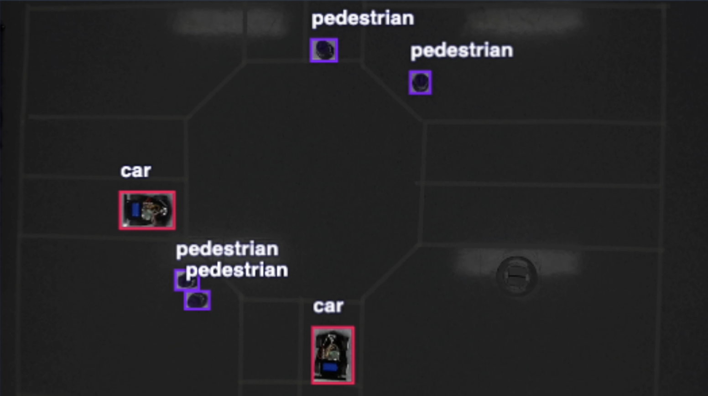

|
William Valentine I'm an undergraduate student in my sophomore year at Rose-Hulman Institute of Technology studying Computer Science minoring in mathematics, robotics and cognitive science. My research explores the intersection of human-robot interaction and computer vision, with a focus on developing frameworks that use a visual understanding a situtation to aid computer systems. Some papers are highlighted. |

|
Research
My research projects explore computer vision and real-time perception systems. From creating explainable models for emotion recognition and refining pose alignment techniques for cooperative vehicle perception to leveraging computational tools to address neurological disease markers. My work emphasizes explainability, precision, and practical applications in real-world environments. |
|

|
Resolving ambiguous instructions given to robots using LLMs with visual context
William Valentine, Michael Wollowski, AHFE, 2025 In-Progress We developed a method to accurately (we achieve >81% accuracy) locate and resolve ambiguous portions of instructions related to common household tasks given to robots. |

|
HCC: An
explainable framework for classifying discomfort from video
William Valentine, Megan Webb, Christopher Collum, David Feil-Seifer, Emily Hand, ISVC, 2024 (Oral Presentation) ISVC The Human Comfort Classifier (HCC) detects discomfort in real time from video, combining pose estimation, facial landmarks, and sentiment analysis in a transparent, rule-based model. This approach is beneficial for social skills training and achieves 78% accuracy without relying on deep learning, ensuring explainable feedback for users. |
|

|
BB-Align: A Lightweight Pose Recovery Framework for Vehicle-to-Vehicle Cooperative Perception
Lixing Song, William Valentine, Qing Yang, Honggang Wang, Hua Fang, Ye Liu ICDCS, 2024 (Oral Presentation) ICDCS / presentation BB-Align is a two-stage framework that improves pose accuracy in vehicle-to-vehicle (V2V) perception by using Lidar Bird’s-eye View (BV) images and bounding boxes. It aligns data from different cars, correcting pose errors without requiring extra training, making it suitable for real-world V2V applications. Tests show BB-Align enhances pose accuracy, achieving errors under 1m and 1°, and improves object detection in error-prone scenarios. |
|

|
Modeling and screening aggregation inhibition of amyloid-beta peptides by small molecules as potential drug candidates
(alphabetical) Kara Dawson, Paul Martino, Emma Ryan, William Valentine, Abigail Wheeler Houghton University SRI, 2023 presentation This research focused on using AutoDock Vina to model protein-ligand binding for kinase inhibitors like Regorafenib, targeting Alzheimer’s pathology by inhibiting tau hyperphosphorylation and amyloid-beta aggregation. This approach aims to identify effective compounds that can slow disease progression. |
|

|
Intersection Traffic Automation for Vehicles
William Valentine, Avery Belanger, Jie Zhao Houghton University SRI, 2023 presentation The project tests a centralized control system using computer vision to manage vehicle and pedestrian flow at intersections. By employing YOLOv8 for real-time detection, it automates queuing to reduce wait times and improve safety. |
|
This website format is fantastic, kudos to Jon Barron. |